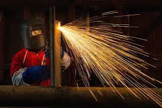
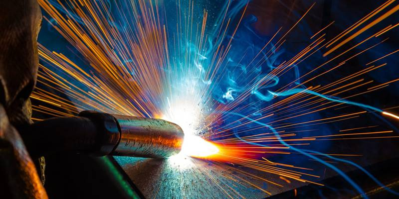

welding is when someone that fuses metal together permanently to make something new
in welding we learned how to weld two piceses of metal together and for our final we made shovles
List the resources available to students in this trade program, including tools, facilities, and educational materials that support learning and development.
I chose welding because it is fun to do and welding is interesting to me. One thing that I like about welding is that you get to make new things out of old thing. So that it does not go to waste it. And last I like that we have the opertunity of welding at Elevate.